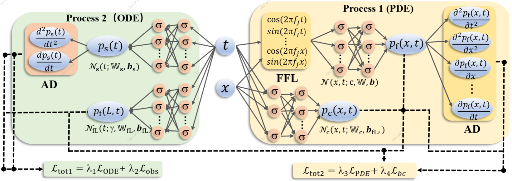

<div id="body">
    <div id="body_border">
    <div id="body_border1">
    <div style="border-bottom: 1px solid #D1D1D1;">
    <div style="border-bottom: 1px solid #959595;">
    <div class="header" style="text-align: center;">
    <div class="line4" style="font-family: Arial, Helvetica, sans-serif; text-align: center;"><span style="color: #000000;"><strong><span class="style17"><span style="background-color: #ffffff;"> 　<font size=6>EarPCG: Recovering Heart Sounds from in-Ear Audio via Physics-Informed Neural Network</font> </span></span><span style="background-color: #ffffff;">&nbsp;</span></strong></span></div>
    </div>
    </div>
    </div>
    <!--header 结束-->
    <div class="IndexList">
    <div id="selfIntroduction" class="style4">
    <p class="style1"><strong>Project Description:</strong></p>
    <p> While earables present a promising avenue for cardiac sens-
ing, whether they may replace the stethoscope to perform heart
sound (a.k.a. PCG) monitoring remains questionable. The latest
effort attempts to generate PCG-like waveform out of in-ear au-
dio collected via earphones, yet its data-driven approach does not
seem to be grounded in the underlying physics. To this end, this
paper introduces EarPCG, a system for continuous PCG monitor-
ing leveraging physics-informed neural models. As opposed to the
debatable belief that bone-conducted PCG appears within ear canal,
EarPCG generates PCG waveforms from the (actually existing) pho-
toplethysmography (PPG) waveforms conveyed via blood vessels.
Arising from pressure variations induced by heartbeats, PPG can be
mathematically described by a Partial Differential Equation (PDE).
Therefore, solving this PDE inversely may reconstruct cardiac dy-
namics and in turn enable the generation of PCG waveforms with
another PDE characterizing the pressure oscillations propagating
through soft tissues. Pipelining the two PDE-solving neural models,
EarPCG achieves accurate PCG monitoring from in-ear audio, while
requiring minimal training. Our extensive experiments leveraging
a custom-built prototype demonstrate the efficacy of our proposed
system. Furthermore, we have conducted clinical trials, with clini-
cians reporting no perceptible difference between authentic PCG
and the sounds reconstructed by EarPCG.

<p>
The early diagnosis and effective management of
Pulmonary Hypertension (PH) are critically dependent on the
accurate monitoring of Pulmonary Arterial Pressure (PAP).
However, current clinical methods are either invasive or resource-
intensive, which limits their application for continuous PAP
monitoring. To overcome this challenge, we introduce a novel,
noninvasive method for PAP monitoring utilizing in-ear audio.
Our approach traces the Heart Sound (HS) through a physics-
guided modeling from in-ear audio. Subsequently, we derive PAP
indicators from the second heart sound (S2) using a sophisticated
signal processing pipeline. This pipeline incorporates mode de-
composition, spectral clustering, and Morphological Component
Analysis (MCA). Finally, a Dendritic Neuron Regression (DNR)
network is employed to determine absolute PAP values from
the extracted indicators. Validation of our method on real-world
data from 26 participants demonstrates clinically acceptable
error margins in the estimation of mean PAP (mPAP), with an
estimation error of 1.31 ± 2.83 mmHg. These promising results
highlight the potential of our in-ear audio approach for devel-
oping wearable, noninvasive, and continuous PAP monitoring
devices. This could significantly improve the management of PH
by providing a more accessible and patient-friendly monitoring
solution.
</p>
    <p><strong><span class="style1">Acknowledgement:</span> </strong></p>
    <ul>
    <li>This project is filed on December 2021 and is patented. For more information please visit our <a href="https://github.com/caichao/earace">git repository</a>
    <!--<p><strong><span class="style1">Updates &amp; News:</span> </strong></p>
    </li>
    </ul>
    </div>
    <div id="selfIntroduction" class="style4">
    <ul>
    <li><strong>2018/12</strong> The <span class="style18"> <strong>mRehab</strong></span> team wins the finalist award (5 out of 74 teams) in NYS Department of Health Aging Innovation Competitions.</li>
    <li><strong>2018/04</strong> The <span class="style18"> <strong>mRehab </strong></span>product starts the first in-home study in East Amherst, NY.</li>
    <li><strong>2018/03</strong> The <span class="style18"> <strong>mRehab </strong></span>student team wins the 2nd place award in UB Aging Innovation Challenges.</li>
    <li><strong>2018/02</strong> The android app of <span class="style18"> <strong>mRehab</strong></span> will be launched in early March 2018.-->
    <p><strong><span class="style1">People:</span> </strong></p>
    <ul>
    <li>Dr. Chao Cai (Associate Proffessor, College of Life Science &amp; Engineering) - Huazhong University of Science and Technology</li>
    </ul>
    <!--<p><strong><span class="style1">Collaborators:</span> </strong></p>
    <p>Dr. Feng Lin, University of Colorado Denver</p> -->
    <p><strong><span class="style1">Related Publications:</span> </strong></p>
    </li>
    </ul>
    </div>
    <div id="selfIntroduction" class="style4">
    <ul>
    <li>[1] Junyi, Zhou, Chao Cai, et. al. "EarPCG: Recovering Heart Sounds from in-Ear Audio via Physics-Informed Neural Network", in ACM SenSys,2026 </li>
    <li>[2] Junyi, Zhou, Chao Cai, et. al. "Continuous Pulmonary Artery Pressure Monitoring using In-ear Microphone", in IEEE INFOCOM,2026 </li>
    </ul>
    </div>
    <head>
    <meta charset="UTF-8">
    <meta name="viewport" content="width=device-width, initial-scale=1.0">
    <title>居中显示的GIF</title>
    <style>
        /* 关键样式：设置容器为Flexbox并居中 */
        .container {
            display: flex;
            justify-content: center; /* 水平居中 */
            align-items: center;     /* 垂直居中 */
            height: 100vh;          /* 使容器高度为整个视口的高度 */
            border: 1px solid #ddd;  /* 可选：为容器添加边框便于观察 */
        }

        /* 控制GIF图片的最大尺寸，避免过大 */
        .container img {
            max-width: 90%;  /* 图片最大宽度为容器的90% */
            max-height: 90%; /* 图片最大高度为容器的90% */
        }
    </style>
</head>
<body>
    <div class="container">
        <!-- 将"your-image.gif"替换为你的GIF文件实际路径 -->
        
    </div>
</body>
    </div>
    </div>
    </div>
    </div>
    <!--body结束-->
